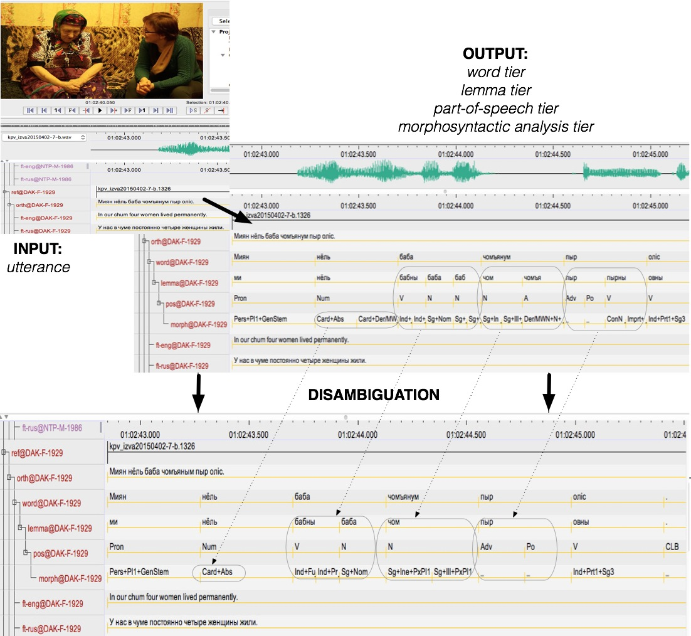

Language Documentation meets Language Technology
Niko Partanen
New project starts
With Rogier Blokland and Michael Rießler we are now starting a new continuation for our language documentation project with Komi, and as lots of changes have been taking place, it is a good moment to go over a bit what is the current situation. Our three year long work with Iźva Komi has now ended, but in many ways the work is just starting. The new project, Language Documentation meets Language Technology aims to work onward with annotating the previously created corpus. However, one aim is to explore into which degree the annotations can be created automatically. One of the choices done in earlier project, IKDP, was to create only relatively shallow annotations, mainly transcriptions and translations, as this probably allows maximal usability of the corpus later. This has been combined to a model where annotations are created as needed, for example, by demands of specific research questions.
Language Technology & ELAN
Similarly there is already rather mature language technology infrastructure for written Komi, and we are currently working with adapting this to more non-standard spoken varieties, which also includes large degree of mixture with Russian. The initial idea, which is still central for our work, is to disambiguate currently existing Finite State Transducer output for Komi with Constraint Grammar rules. With written Komi the current analysator reaches already very satisfactory results, but there is lots of ambiguity. The poster presentation Ciprian Gerstenberger, Niko Partanen and Michael Rießler had recently (2017) describes the workflow well. PDF is available in ResearchGate and also openly downloadable from here.
The image from the poster is reproduced here:

It illustrates our approach where following parts of annotation process are done automatically:
- Tokenization
- Lemmatization
- POS-tagging
- Disambiguation (as far as possible)
The manually corrected / inspected annotations are copied to the tier tagged with prefix part -gold-, which prevents them being rewritten anew. We are still experimenting with the best practices and working with the technical implementation, but approach like this offers lots of new possibilities. Already doing the tokenization automatically would increase the consistency of the corpora a lot, as now it is common that tokenization is done manually every time the transcription tier is edited, and ELAN does not store information about the specific set of punctuation tokens user has selected when tokenizing given tier.
With Constraint Grammar rules it is possible to eliminate the results which are impossible in the given context, which also produces a very formal syntactic description. However, since Constraint Grammar describes the constructions which are not possible, it approaches syntax from somewhat unusual angle. To complement the rules we are also producing a more traditional syntactic description of Komi, but also with this we are looking for something new, which in this case comes in form of exploring possibilities for open publishing practices.
Rule based and statistical tools
We have received occasional comments that these rule based approaches are not necessarily the current state of the art in natural language processing, but on the other hand rule based descriptions align well with traditional approaches to grammatical description. Especially with lesser resourced languages there is an acute need to describe their grammatical systems properly, and formalizing the observations as a model for morphological analysis could be a very interesting way to go. And this doesn’t mean that we would be somehow against more statistical methods, quite the contrary! For six months, starting in April 2017, Niko Partanen will be working in LATTICE laboratory in Paris, and one explicit goal of this work is to produce an annotated gold corpus of Komi which can be used to train more statistical taggers. Also, very excitingly, Facebook recently published pre-trained word vectors for lots of languages, among those both Komi-Zyrian and Komi-Permyak. Many things are happening in natural language processing nowadays, and we aim to explore as far as possible what can be used in language documentation work.
One trivial benefit of statistical model could be that if we want to manually disambiguate the results, then a model like this can be used to suggest the most likely selection first. Probably software like FLEx and Toolbox does something like this at the background, but for us it is important to be able to express these processes in a way that can be observed, examined and run again in different environments. Language documentation as a field is still stuck to lots of very dysfunctional software and semi-manual solutions, as it seems that Toolbox, FLEx and Arbil are still very much the standard everyone uses. We hope our work would eventually lead into finding new ways to work with our data and manage language documentation corpora more efficiently.
Forthcoming
New fieldwork as such is not planned for this project period, but Niko Partanen will be teaching a seminar in Syktyvkar in June 2017, with the goal to teach use of ELAN and other contemporary tools used in language documentation to Komi students and researchers. This means that new Komi data will be coming, and probably staying some weeks in Syktyvkar gives also a good possibility to record some new material, at least to elicitate a bit to get answer into few unanswered questions. We try to widen our collaboration with researchers who work with languages spoken especially in Barents Region and Northern Russia, but as many issues in language documentation are probably somewhat universally shared, we do not want to limit our collaboration to any geographic area as such, this is just where our own expertise primarily stands.
References
Gerstenberger, Ciprian, Niko Partanen, and Michael Rießler. 2017. “Instant Annotations in ELAN Corpora of Spoken and Written Komi-Zyrian, an Endangered Language of the Barents Sea Region (Russia).” Poster at ComputEL-2, March 6–7, 2017, Honolulu, Hawai’i. doi:10.13140/RG.2.2.14503.34727.
 2016 Niko Partanen or individual writers.
2016 Niko Partanen or individual writers.